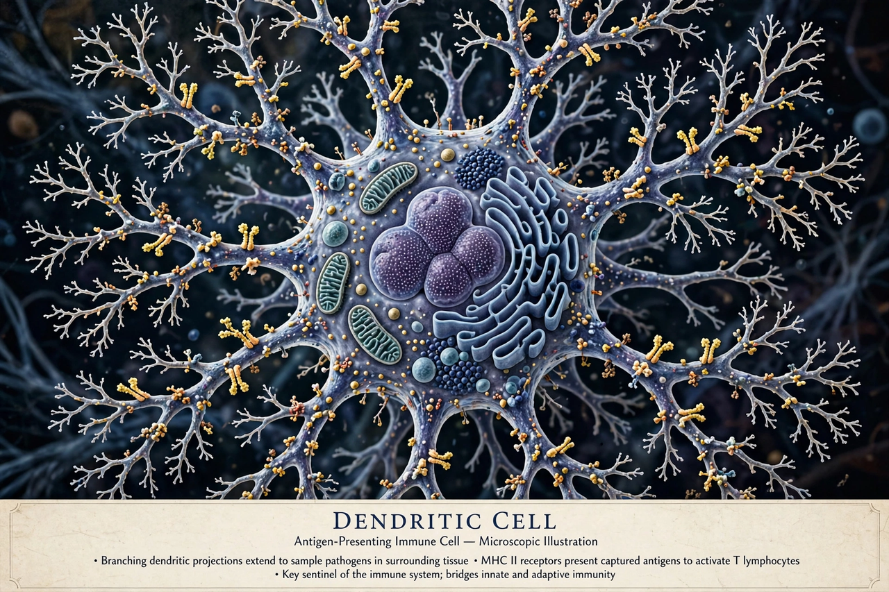

Dendritic cells (DCs) are antigen-presenting cells of the mammalian immune system, named for their branched, tree-like projections (dendrites). Discovered by Ralph Steinman in 1973, they are the most potent activators of naive T cells and form a bridge between innate and adaptive immunity.

| Dendritic cell | |
|---|---|
| System | Immune system |
| Location | Skin, mucosa, lymphoid tissues, blood |
| Function | Antigen presentation, T-cell activation |
| Identifiers | MeSH D003713 |
Dendritic cells develop from hematopoietic stem cells in bone marrow. Major subsets include conventional dendritic cells (cDC1 and cDC2), plasmacytoid dendritic cells (pDCs), which produce large amounts of type I interferon, monocyte-derived DCs formed during inflammation, and Langerhans cells of the skin.
Immature DCs patrol peripheral tissues, capturing antigens by phagocytosis, macropinocytosis and receptor-mediated endocytosis. On encountering pathogen-associated molecular patterns via Toll-like receptors, they mature, upregulate MHC class II and co-stimulatory molecules CD80 and CD86, secrete cytokines such as IL-12, and migrate via CCR7 to lymph nodes. There they present peptide antigens to T cells, initiating adaptive responses, while also promoting tolerance to self-antigens.
Dendritic cells are studied in cancer immunotherapy — notably sipuleucel-T for prostate cancer — vaccine design, autoimmune disease, and transplantation. HIV and some tumours exploit or evade DC function.
Paul Langerhans described epidermal dendritic cells in 1868, but Steinman and Zanvil Cohn identified dendritic cells in mouse spleen in 1973. Steinman shared the 2011 Nobel Prize in Physiology or Medicine for the discovery.